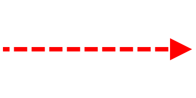

QAK Notes
What is QAK
QActor (meta)model is the name given to the custom language inspired by Akka actor model, based on Hewitt's work at MIT.
The aim of QActor is to have a generic modeling language for the analysis and project
of distributed applications and for the definition of behavioral models of actors
that behave like FSM (Fine State Machines).
The 'k' in QAK means that the language is implemented with Kotlin (without any Akka support).
QAK is based on some fundamental concepts, which can be summarized as follows:
The 'k' in QAK means that the language is implemented with Kotlin (without any Akka support).
- A
QA-System is a collection of active entities (QActors) each working in a computational node (Context ). QActors interact by usingMessages of different types (Dispatch, Request,...) and Events.- A QActor can deliver information to another QActor (both local or remote) by using a proper operations or by emitting events.
- High-level send-operations do not use low-level references, but only actor-names.
-
Each context owns a set QActors that can interact with components (actors or 'aliens') working on a different node, by means of the following protocols:
TCP : on the port specified by the ContextCoAP : on the port specified by the ContextMQTT : using the broker specified in themqttBrokerdeclaration
Messages and Events
In the QActor metamodel:-
a
message is intended as information sent in asynchronous way by some source to some specific destination.
For asynchronous transmission, we intend that the messages can be 'buffered' by the infrastructure, while the 'unbuffered' transmission is said to be synchronous. -
an
event is intended as information emitted by some source without any explicit destination.
Events whose identifier start with the prefixlocal_are not propagated outside the context in which they are generated.
QAK Syntax
File Structure Template
A QAK model is defined by organizing its description according to the following template:System < NAME OF THE SYSTEM > //mqttBroker "broker.hivemq.com" : 1883 //OPTIONAL //DECLARATION OF MESSAGES AND EVENTS //DECLARATION OF CONTEXTS Context CTXNAME ip [host="HOSTIP" port=PORTNUM] //DECLARATION OF ACTORS
Messages
An application designer can deliver messages by using the following methods:forwardrequestreplyToaskForemit
Messages Declaration
Different types of message are declared using a Prolog-like syntax:Event: "Event" name=ID ":" msg = PHead ; Dispatch: "Dispatch" name=ID ":" msg = PHead ; Request: "Request" name=ID ":" msg = PHead ; Reply: "Reply" name=ID ":" msg = PHead ; PHead : PAtom | PStruct | PStructRef ; ...
Sending-messages Operations
Forward : "forward" dest=[QActorDeclaration]
"-m" msgref=[Dispatch] ":" val = PHead ;
Emit : "emit" msgref=[Event] ":" val = PHead ;
Demand : "request" dest=[QActorDeclaration]
"-m" msgref=[Request] ":" val = PHead ;
Answer : "replyTo" reqref=[Request]
"with" msgref=[Reply] ":" val = PHead ;
ReplyReq : "askFor" reqref=[Request]
"request" msgref=[Request] ":" val = PHead ;
Project Setup
IDE
-
Download Gradle (version >= 7.4.2): Gradle Releases
- Make sure to have its
bin/directory added to the PATH system variable.
- Make sure to have its
- Download Eclipse Xtext: from the installer select Eclipse DSL Tools
- Open Eclipse and create a new workspace
- Set the Java compiler compliance level as
11 :Window > Preferences > Java > Compiler > Compiler compliance level: 11 - Add and select the installed JRE as jdk
11.0.11 :Window > Preferences > Java > Installed JREs > Add > Standard VM > JRE home: /path/to/jdk_folder -
Add the following files to the Eclipse
dropins/folder. Those are the support for the QAK (meta)modeling language:it.unibo.Qactork_1.3.2.jar it.unibo.Qactork.ui_1.3.2.jar it.unibo.Qactork.ide_1.3.2.jar
Project Creation and Execution
-
Create a new directory, and move inside it:
mkdir <project_name> cd <project_name>
-
Create a new Java project using
gradle:-
Select type of project to generate:
1: basic -
Select build script DSL:
1: Kotlin -
Generate build using new APIs and behavior (some features may change in the next minor release)? (default: no) [yes, no]
Enter (no) -
Project name (default: Sprint1_ProblemAnalysis):
Enter (default project name)
gradle init (select 1, 1, enter, enter)
-
Select type of project to generate:
-
Import the project in Eclipse as Existing Gradle Project:
File > Import > Gradle > Existing Gradle Project -
Add Java nature to the project:
Project > Project Natures > Add > Java -
Add two source folders
src andresources :File > New > Source Folder - Create a
.qak file in src. Eclipse will ask if you want to convert to an Xtext project: selectYes -
Write the file content and save. Qactork plugins will:
- create
build2022.gradlefile - create
sysRules.plesysXXX.pl, wheresysXXXis the name of the
- create
-
Copy the content of
build2022.gradlefile tobuild.gradle - Insert Kotlin utility code used in the model into
resources directory -
Execute with:
gradlew run
Build the Diagram
-
Install Graphiz from https://graphviz.org/download/
- If the installer does not, add its
bin/folder to the PATH system variable
- If the installer does not, add its
- Make sure to be using at least version 1.3* of the QAK plugins
-
(Optional but recommended):
-
Create a virtual environment (e.g. with anaconda):
conda create -n iss2022 python=3.9
That will create a virtual environment named iss2022, with python 3.9 installed. -
Activate the environment:
conda activate iss2022
-
Create a virtual environment (e.g. with anaconda):
-
Run the generated
Arch_***.pypython script to generate the.pngimage:python Arch_file_name.py
-
bis. Otherwise: install
p2jandjupyter notebook:pip install p2j pip install notebook
Then convert the python script to a.ipynbfile:p2j Arch_file_name.py
And run the jupyter notebook:jupyter notebook Arch_file_name.ipynb
QAK Legend
| Image | Meaning |
|---|---|
| Actor | |
| External Actor | |
| QAK Environment - it's used to represent the emission and reception of events | |
| Dispatch | |
| Request | |
| Reply | |
|  | Event |